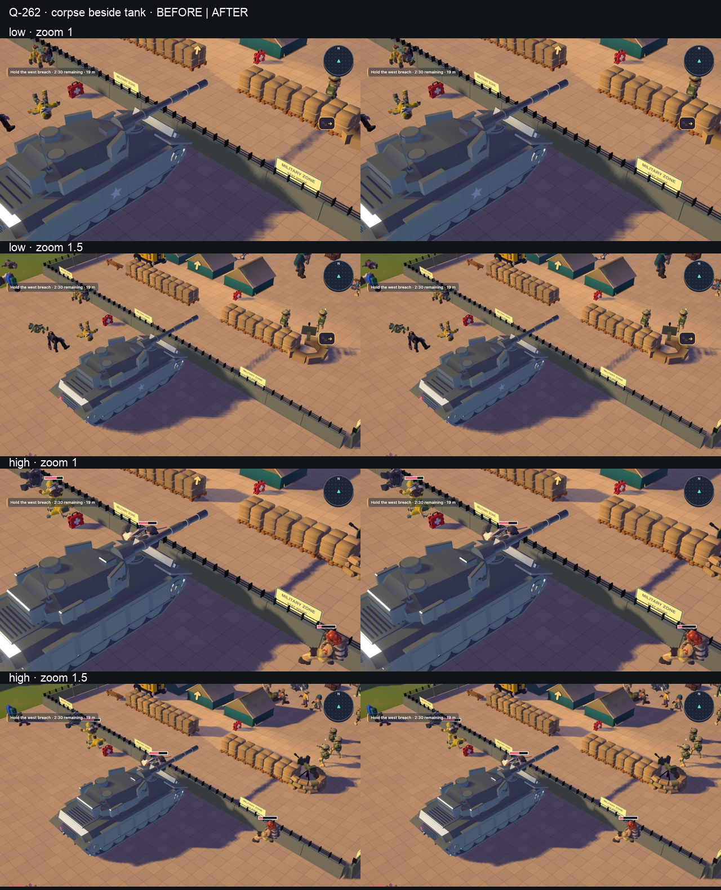
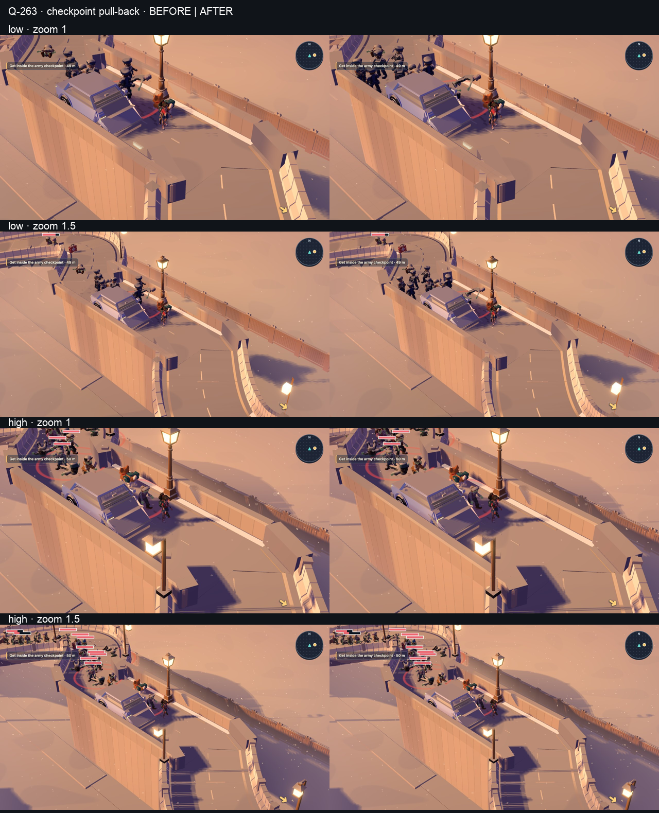
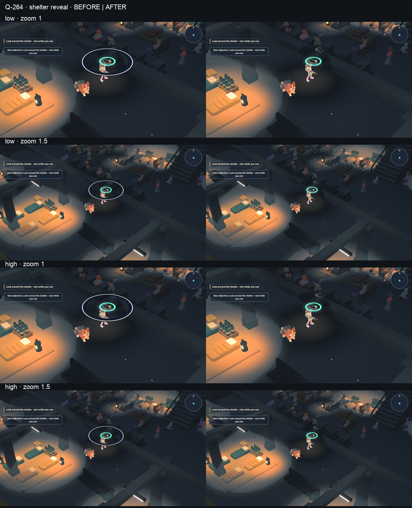
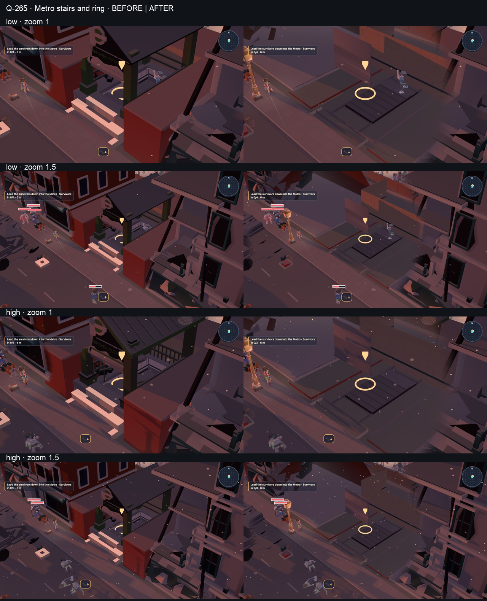
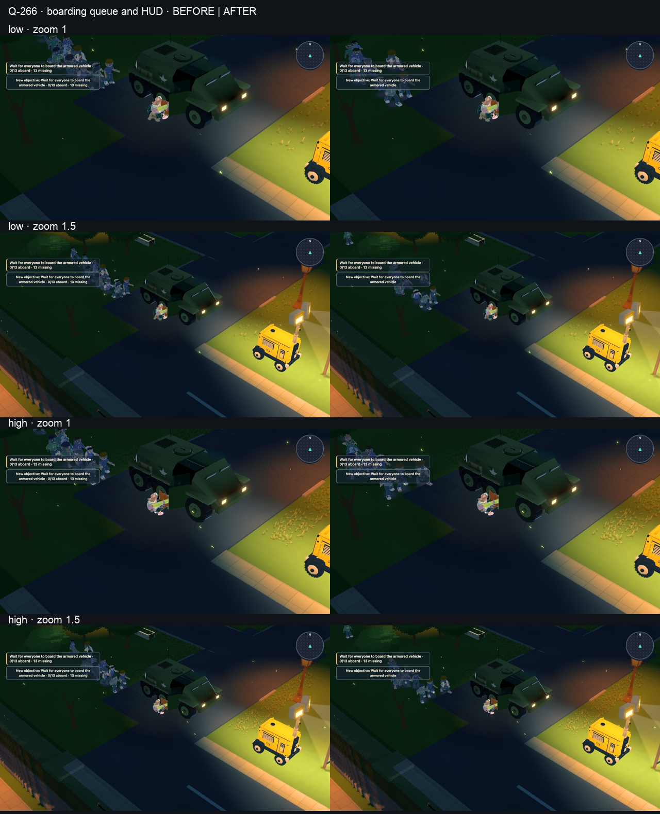
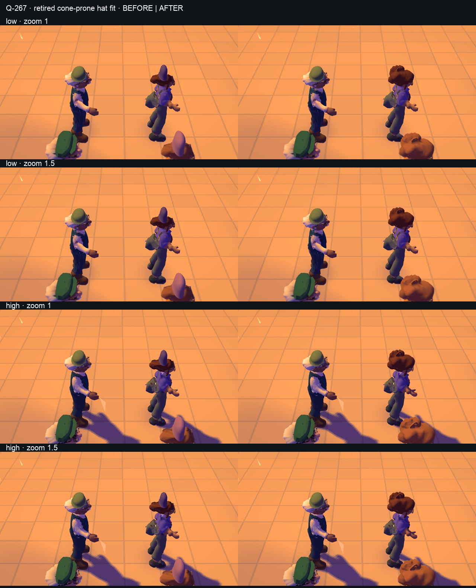
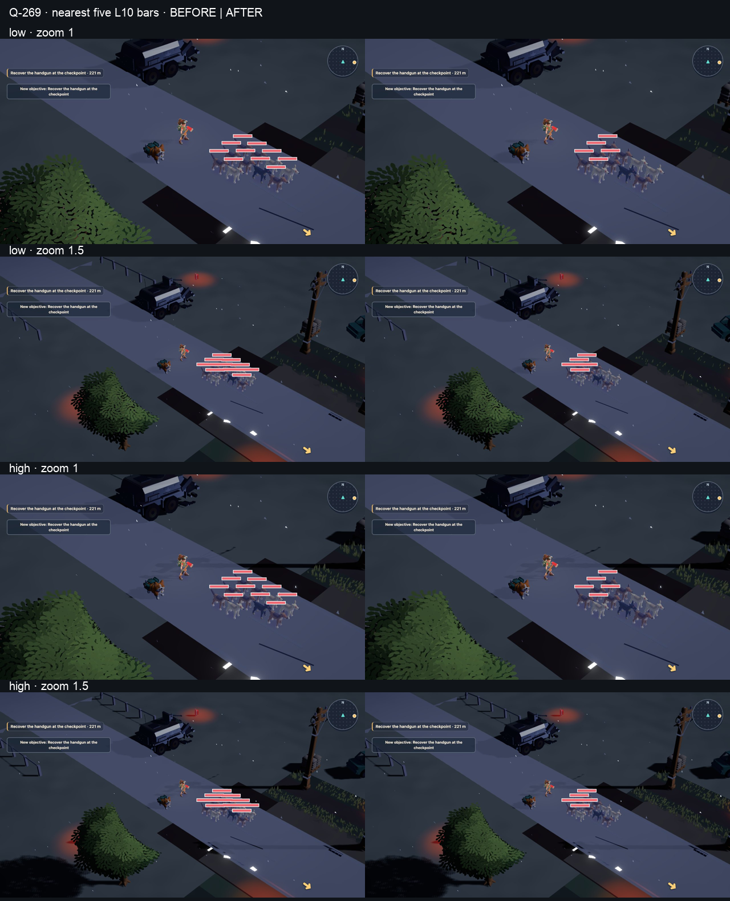
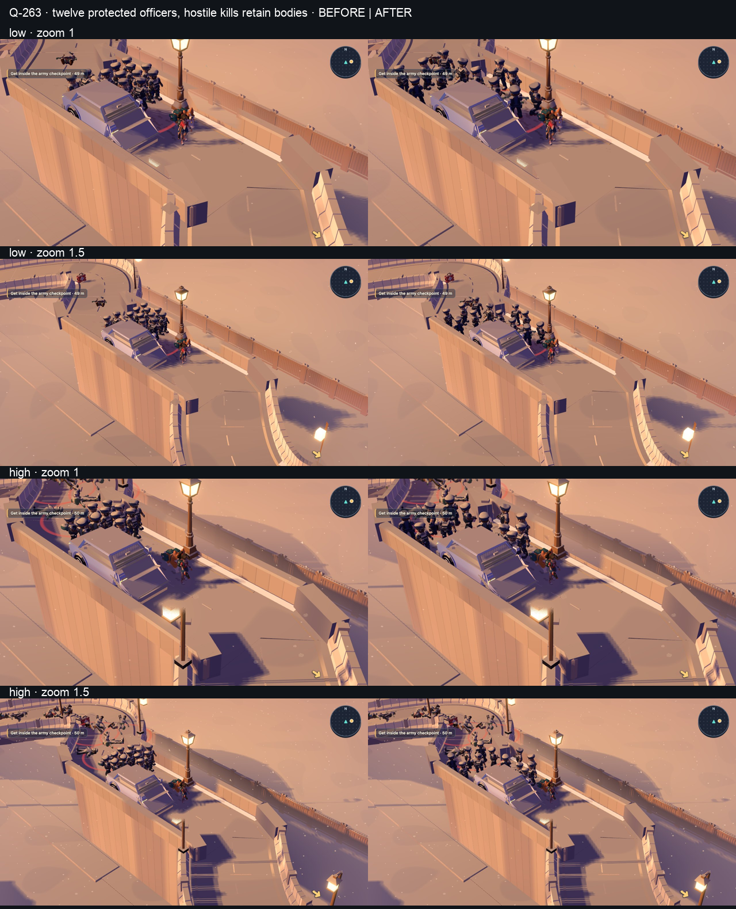
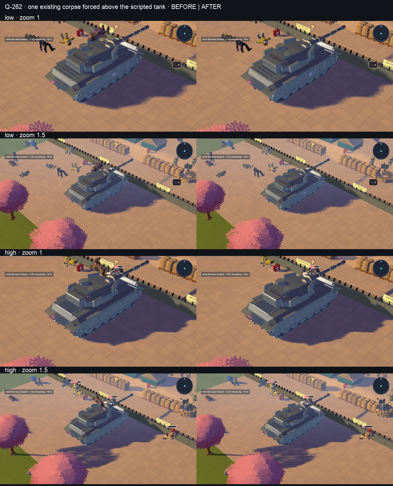
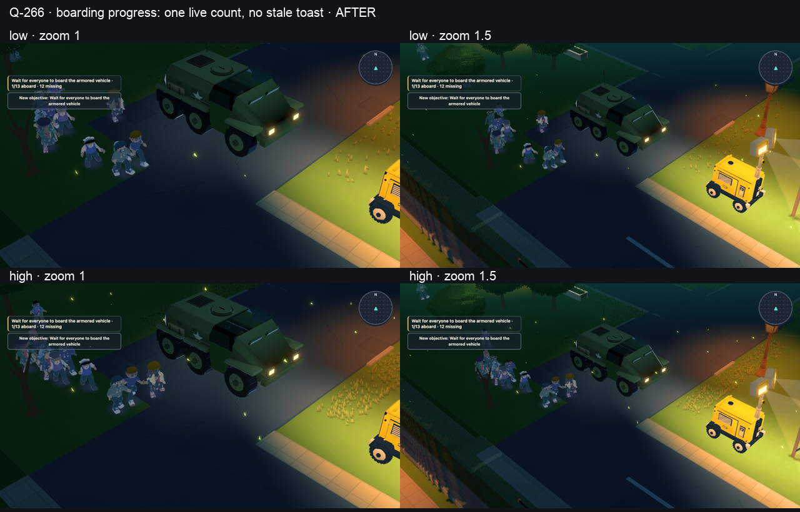

Baseline b98aaa604; candidate f3b6cac63. All headless through the shared browser pool. Raw frames are 1280 × 720. Normal tour captures retain every actor. The extra twelve-officer placement probe uses the production brain, raises health, kills hostiles without removing corpses, and waits 600 ticks on both sources. It records twelve survivors and twelve distinct destinations after versus two shared destinations before. The normal high tour reaches this ramp with one officer alive, so it alone cannot prove crowd spacing.
The forced corpse probe moves one existing dead actor above the actual scripted tank. All 17 low / 37 high corpses remain. Relocated probe bodies can be behind the tank and occluded; their receipts record grounded placement outside the hull. Gameplay camera framing and L5 balance are unchanged.










Capture, material and shader receipts · Raw frames · Original final visual review